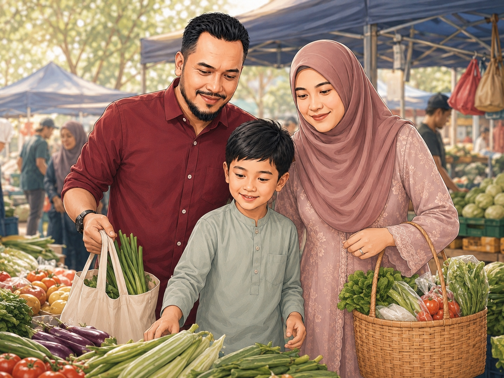
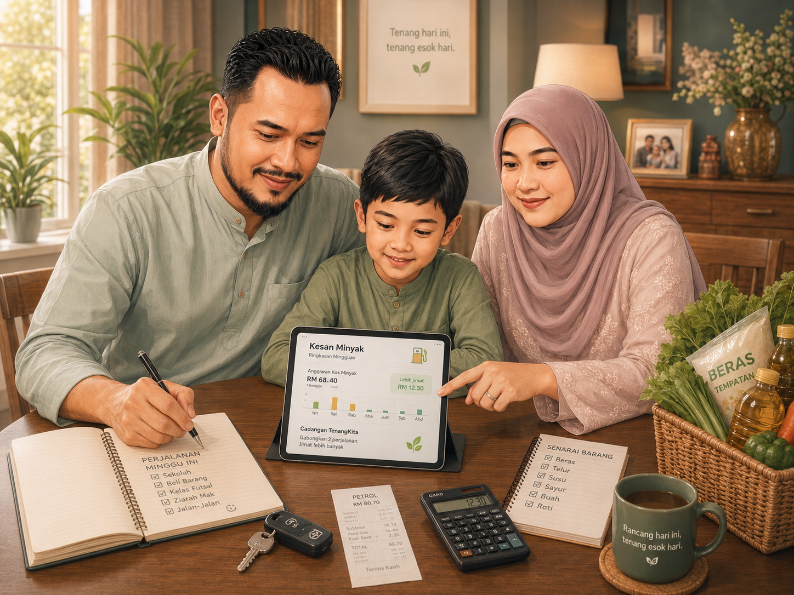

Hari ini untuk keluarga Ismail & Nora.
TenangKita menterjemahkan isyarat ekonomi negara kepada kefahaman keluarga, pilihan berhampiran dan tindakan mingguan yang boleh dibuat bersama.

Adakah keluarga kami masih stabil?
Ringkasan ini membantu keluarga memahami apa yang berubah, mengapa skor muncul dan tindakan paling praktikal minggu ini.
Skor Ketenangan Belanja
StabilTekanan belanja meningkat sedikit, tetapi masih terkawal.
Apa yang berubah bulan ini?
Naik RM68 berdasarkan data contoh.
Data ContohTambahan anggaran RM54.
AnggaranPilihan berhampiran perlu disemak.
Semak RasmiMungkin berkaitan, bukan kelayakan.
Semak RasmiDi mana boleh mula semak harga lebih baik?
TenangKita membantu keluarga melihat barang asas yang perlu diberi perhatian, pilihan harga berhampiran dan Jualan Rahmah yang perlu disahkan melalui sumber rasmi.
Bakul Asas Keluarga Malaysia
Fokus kepada barang yang paling dekat dengan perbelanjaan dapur keluarga.

Peluang Harga Berhampiran
Gunakan lokasi untuk melihat pilihan berhampiran. Lokasi boleh dimasukkan secara manual dan tidak digunakan untuk menentukan kelayakan bantuan.
Peta keputusan
Peta sebagai sokongan selepas pilihan dikenal pasti melalui senarai.
Paparan peta demo menggunakan OpenStreetMap. Lokasi, tarikh dan harga sebenar perlu disahkan melalui sumber rasmi.
Bagaimana minyak memberi kesan kepada keluarga?
Minyak bukan hanya harga petrol. Ia berkait dengan perjalanan kerja, sekolah, pasar dan urusan keluarga.
Anggaran Impak
Tambahan bulanan
Skor dikemas kini
Stabil
Uji senario keluarga
Minyak naik
Jika harga minyak atau penggunaan perjalanan meningkat, tekanan belanja boleh bertambah sedikit.
Skor mungkin turun 3 hingga 6 mata.
Perjalanan perlu dirancang dan urusan kecil boleh digabungkan.
Gunakan kalkulator dan semak pelan mingguan keluarga.

Apa yang boleh kami buat minggu ini?
Pelan Keluarga menukar isyarat data kepada tindakan kecil yang boleh dibuat bersama.
Ritma keluarga minggu ini
Checklist keluarga
Perbualan keluarga
Nora: Apa barang dapur yang perlu kita utamakan minggu ini?
TenangKita: Fokus kepada beras, ayam dan minyak masak. Semak pilihan harga berhampiran sebelum membeli.
Apa yang perlu disemak secara rasmi?
TenangKita membantu mengenal pasti manfaat yang mungkin berkaitan. Kelayakan sebenar perlu disemak melalui portal rasmi kerajaan.
Kenapa cadangan ini muncul?
Beberapa barang asas memberi kesan kepada bakul keluarga.
Penggunaan minyak bulanan mempengaruhi tekanan belanja.
Manfaat hanya mungkin berkaitan dan perlu disahkan.
Boleh percaya ke?
TenangKita mesti jelas tentang sumber, had penggunaan dan sebab sesuatu cadangan muncul.
Bagaimana TenangKita menyambung nilai Pantau Krisis kepada rakyat?
Pantau Krisis membantu negara melihat tekanan ekonomi secara makro. TenangKita membawa kefahaman itu ke peringkat isi rumah.